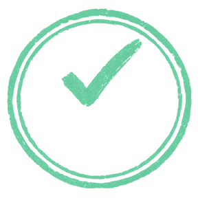

英[praɪz] 美[praɪz]
n.奖项；奖品
词表上背过的意思
The committee decided to prize accuracy over speed …
Local farmers continue to prize the traditional seed varieties …
… researchers still consider them highly prized records of the region’s early plant life.
value重视
treasure珍视
valued珍贵的
重视 珍视 珍贵的同一个词 · 三个句子 · 三种意思
意思，在句子里。
每个词，一组语境题
作答，马上有反馈
逐项解析，辨清易混项
做完这个词的题组
这个词，完整学完
下一个词，自己选
The committee decided to prize accuracy over speed in the final review, because a single overlooked error could undermine the whole report.
委员会决定在最终审核中把准确性放在速度之上，因为一个被忽视的错误可能影响整份报告。
The word “prize” in the passage is closest in meaning to:
文中单词“prize”的含义最接近：
语境核心要点
核心线索是 accuracy over speed：把准确性置于速度之前，说明 accuracy 被高度重视。
逐项解析
最强迷惑项对比
正确项 · valueprize 在这里表示把 accuracy 放在优先位置，对应 value。
迷惑项 · delaydelay 只表示推迟，没有“更重视某项”的语义。

prize
题组完成 · 已计入学完
把单词放回语境里练。
Contexta